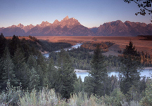
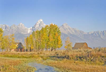
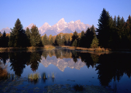

Eastern Idaho Photographic Society


©Roger Heng Oxbow Grand Teton National Park
The Outdoor Photographer magazine has listed the Grand Teton National Park as a place to take landscape photographs.
We have found it also has wildlife and flowers to photograph.
One can look on Google Earth "Grand Teton Park" and spend hours looking at images posted taken in the park.
Grand Teton National Park is located just south of Yellowstone or 2 hours from Idaho Falls. There are numerous photographic views of the Tetons.
The Grand Teton Photographer's Guide", By Leo L. Larson and Helen Henkel Larson, Earthwalk Press Book, Printed by Lorraine Press, ISBN# 0-915749-01-7, 1988, has information on photographing in Grand Teton National Park.
Grand Teton National Park Photographer's Map and Guide by Leo L. Larson, Earthwalk Press, ISBN#978-0-915749-25-6, © 2008. Map of park with locations
"The Jackson Hole Photographers Pocket Guide" was obtained from a Jackson Photography Store and availability is unknown. This guide is helpful in photographing GTNP and the Jackson Hole area.
Grand Teton National Park Photo Map by Miles Hecker, Wyofoto LLC.
How to photograph the Moulton's Barn. The barn is located in the Grand Teton National Park
 |
 |
 |
 |
Tetons from Moose |
Moulton Barn |
Moulton Cabin in Winter |
Moulton Cabin in Summer |
©
Michael Fryer 2010 |
© Roger Heng |
© Sue Heng |
© Sue Heng |
|  |  |  |
 |
Snake River Outlook |
Moulton Homestead in Fall |
Fall at Oxbow Bend |
Schwabachers Landing |
© Sue Heng |
© Sue Heng |
© Roger Heng |
© David Gale |
Photo Locations and Other Links
National Parks| Monument and Reserve| Bureau of Land Management| National Forests| Near By Ghost Towns| Near By Wildlife Refuges| Weather| Sunrise/Sunset Times | Photographers/Photo Clubs
Photographs Copyright© Photographer, Owner, or Eastern Idaho Photographic Society. Photographs
may not be reproduced in any manner without written permission.
Web Page Copyright© 2011 Eastern Idaho Photographic Society